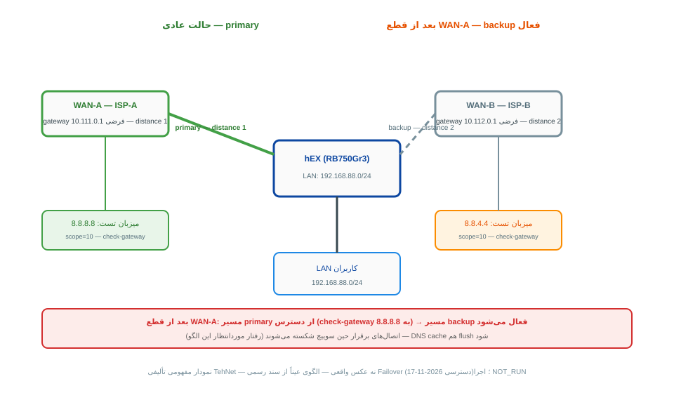

وضعیت درس: DRAFT / NOT_DEPLOYED — در انتظار مرور.
آموزش تصویری از سری MikroTik؛ مخاطب: مدیر شبکه.
سناریوی کاملاً فرضی و آموزشی با دادهٔ ساختگی؛ هیچ شبکهٔ واقعی دستکاری نشده و هیچ اجرای واقعی NOT_RUN است.
نمودار مفهومی و تألیفی است (نه عکس واقعی).
failover سندشدهٔ RouterOS = دو default route با distance متفاوت (اصلی=1، پشتیبان=2) که هرکدام با `check-gateway=ping` یک مقصد خارج از شبکه را مانیتور میکنند — نه فقط gateway ISP، چون ممکن است لینک بالا باشد ولی اینترنت قطع. برای gatewayهای از طریق میانی، الگوی رسمی recursive routing (مسیر میزبان تست با scope=10 و default با target-scope=11) است. دو یادآوری مهم: NAT باید برای هر دو WAN تعریف شود؛ و با سوییچ مسیر، اتصالهای برقرار میشکنند (حالت اتصالمحور پیشرفته، خارج دامنهٔ این درس).
| بند | مقدار فرضی |
|---|---|
| روتر | hEX (RB750Gr3)، RouterOS v7.16+ |
| WAN-A اصلی | ether1 — gateway فرضی 10.111.0.1 (ISP-A) |
| WAN-B پشتیبان | ether5 — gateway فرضی 10.112.0.1 (ISP-B) |
| مقصدهای تست خارج از شبکه | 8.8.8.8 (از WAN-A) · 8.8.4.4 (از WAN-B) — عین الگوی سند رسمی |
| LAN | 192.168.88.0/24 روی `bridge` (مبناى M3) |
| اجرای واقعی | NOT_RUN — دستورها عیناً از سند رسمی failover با مبنا وصلشده |
| روش | میگیرد | نمیگیرد | پیچیدگی |
|---|---|---|---|
| check-gateway فقط روی gateway ISP | قطع لینک مستقیم | «لینک بالا، اینترنت قطع» (خرابی میانی ISP) | کم |
| recursive به مقصد خارج از شبکه (الگوی رسمی) | خرابی میانی هم؛ هر WAN با مقصد خودش | اگر خود مقصد تست قطع شود (faux failover) → گام دوم: میزبان دوم | متوسط |
| دو میزبان تست برای هر WAN | کاهش faux failover | سند رسمی: با ECMP، failover کامل فقط وقتی همه میزبانها از دسترس خارج شوند | متوسط |
| ECMP بهعنوان failover | — | ECMP توزیع بار است نه failover؛ اتصالها میشکنند | — |
# NAT برای هر دو WAN (سند رسمی: هر uplink یک masquerade)
/ip firewall nat
add chain=srcnat action=masquerade out-interface=ether1 comment="TN-M6 WAN-A"
add chain=srcnat action=masquerade out-interface=ether5 comment="TN-M6 WAN-B"
# مسیرهای میزبان تست (scope=10) — الگوی recursive سند رسمی
/ip route
add dst-address=8.8.8.8 scope=10 gateway=10.111.0.1 comment="TN-M6 تست WAN-A"
add dst-address=8.8.4.4 scope=10 gateway=10.112.0.1 comment="TN-M6 تست WAN-B"
# default اصلی و پشتیبان — target-scope=11 از مسیرهای تست حل میشود
add distance=1 gateway=8.8.8.8 target-scope=11 check-gateway=ping comment="TN-M6 primary"
add distance=2 gateway=8.8.4.4 target-scope=11 check-gateway=ping comment="TN-M6 backup"سند رسمی توضیح میدهد: default routeها «بهطور recursive از طریق میزبانهای تست حل میشوند» و «بدون مسیرهای میزبان، هر دو default غیرفعال میمانند» — یعنی دو ردیف scope=10 شرط کارکرد کل الگو است.
| گام | عمل | انتظار | شاهد |
|---|---|---|---|
| ۰ | وضعیت عادی: `/ip route print` — primary active، backup غیرفعال | فقط primary active | خروجی print |
| ۱ | قطع WAN-A (کابل ether1 — فرض سناریو) | route backup active میشود؛ ترافیک از WAN-B | route print + `ping 8.8.8.8` موفق |
| ۲ | برگشت WAN-A | primary دوباره active (distance کمتر برمیگردد) | route print |
| ۳ | ثبت اثر | اتصالهای برقرار حین سوییچ شکستند (رفتار موردانتظار این الگو)؛ لاگ رخداد ثبت شد | گزارش قبل/بعد |
توضیح صادقانه: این الگو failover «مسیر» را سند میکند؛ حفظ اتصالهای موجود حین سوییچ نیازمند طراحی اتصالمحور (routing-table + mangle) است که خارج دامنهٔ این درس و برای پروژهٔ واقعی یک بند SOW جداگانه است.

شرح متنی نمودار (جایگزین تصویر برای دسترسپذیری): روتر hEX در مرکز با دو خروجی: WAN-A به ISP-A (gateway 10.111.0.1 — مسیر سبز اصلی) و WAN-B به ISP-B (gateway 10.112.0.1 — مسیر خاکستری پشتیبان). از هر WAN یک خط به مقصد تست خارج از شبکه (8.8.8.8 از A و 8.8.4.4 از B) کشیده شده — همان چیزی که check-gateway مانیتور میکند. نیمهٔ پایین: حالت «بعد از قطع WAN-A» — مسیر سبز با ضربدر و مسیر پشتیبان فعال با فلش. برچسب «تألیفی/مفهومی» و یادداشت NOT_RUN.
| نشانه | علت محتمل | بررسی | راهحل |
|---|---|---|---|
| failover انجام نشد ولی اینترنت قطع بود | check-gateway فقط gateway ISP را میپینگد — لینک up بود | الگوی recursive با مقصد خارج از شبکه | الگوی این درس |
| هر دو default غیرفعال ماندند | مسیرهای میزبان تست (scope=10) جا افتاده | سند رسمی: «بدون آنها هر دو default غیرفعال میمانند» | افزودن دو مسیر میزبان |
| failover نیمهکاره با دو میزبان | رفتار سندشدهٔ ECMP: بستن فقط با از دسترسرفتن همهٔ میزبانها | طراحی را با نیاز بسنجید | تکمیزبان برای failover سریع؛ یا پذیرش رفتار |
| بعد از failover سایتها کند/خطا | cache DNS کلاینت/روتر از مسیر قبلی | flush + تست مجدد | مورد عیبیابی عملیاتی، نه rule |
| WAN-B کار نمیکند وقتی لازم شد | NAT برای WAN-B تعریف نشده | `/ip firewall nat print` | هر دو masquerade (الگوی سند رسمی) |